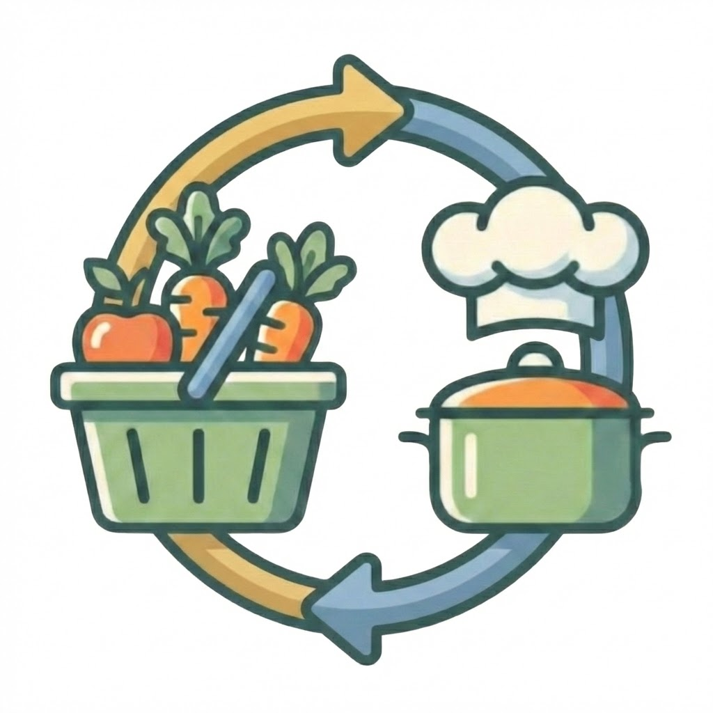

Reciprocal: Recipe to Grocery
I designed this RevenueCat Shipyard project to reduce the friction between finding a recipe and actually getting the ingredients needed to cook it.

Overview
I developed Reciprocal for the RevenueCat Shipyard Creator Contest in response to a common behavioral gap: people save recipes frequently, yet far fewer of those recipes are ultimately prepared. I framed that gap as an organizational and activation problem rather than a content problem alone.
I designed the app to let people save recipes they discover online, consolidate them in one place, extract ingredients, and automatically generate grocery lists. This reduces the number of manual steps between inspiration and execution, which is the point in the workflow most likely to break down.
Problem Space
I grounded the concept in both the hackathon brief and my own waitlist survey. Eitan Bernath's framing highlighted the overload created by recipes scattered across cookbooks, video, and social platforms. My survey added quantitative evidence showing where that friction appears operationally.
Those findings pointed me toward a specific product opportunity: by centralizing saved recipes and removing grocery-list creation as a manual task, I could address both recall failure and preparation friction.
Goals
1. Centralize saved recipes from scattered discovery sources into one dependable destination.
2. Reduce the effort and error involved in turning a recipe into a usable grocery list.
3. Keep the app native to iOS conventions so users can adopt it with minimal learning cost.
4. Build a monetization model that maps premium pricing to real operational cost instead of arbitrary gating.
Solution + Prototype
I designed Reciprocal as an iOS application that bridges recipe discovery and meal execution. After a user saves a recipe link, the app generates a recipe detail page with ingredients and instructions, then creates a grocery list automatically.
Core product moves
- Capture recipes from blogs and websites into one saved library
- Support video-based recipe extraction as a premium capability
- Generate ingredient lists automatically to reduce setup effort
- Keep grocery interaction lightweight and familiar
Why that matters
- I reduce how often saved recipes are lost across apps and platforms
- The grocery step becomes less likely to be abandoned
- Manual list errors are reduced
- The path from recipe intent to meal preparation becomes shorter
Design Decisions
I followed Apple's Human Interface Guidelines closely so the value came from the workflow rather than from asking users to relearn basic navigation. Lists use familiar iOS patterns and the navigation styling referenced the liquid-glass visual language Apple introduced in 2025.
One of my more deliberate product decisions was the Commitment screen in onboarding. I used that screen to frame the product around what a user could accomplish with the app, borrowing from retention-oriented thinking rather than treating onboarding as a feature tour. My goal was to create early ownership and position the product as a tool for follow-through, not simply for storage.
Business Strategy
I built the business model around the product's actual cost structure. Blog and website recipe saving remained free, while video extraction sat behind a paywall because transcription and model usage are the main variable cost centers.
Pricing
- $4.99 monthly
- $39.99 yearly
- 3-day free trial
Cost logic
- Supadata handles transcription credits
- GPT-4o-mini supports ingredient extraction from video
- Pro gating protects gross margin while keeping the core product useful for free users
I treated pricing as part of the product design rather than as an afterthought. I tied the premium feature to a real operating cost instead of introducing a generic subscription wall.
Next Steps
1. Add image transcription for physical or screenshot-based recipes.
2. Integrate with Instacart to reduce the distance between list generation and ingredient ordering.
3. Support export into Apple Notes for users with established planning habits.
4. Introduce premium AI rewrite and substitution tools for beginners or constrained diets.